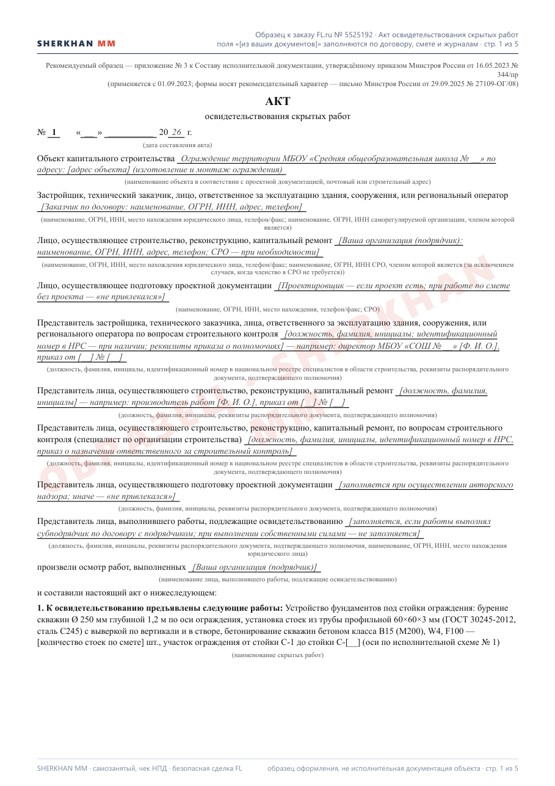
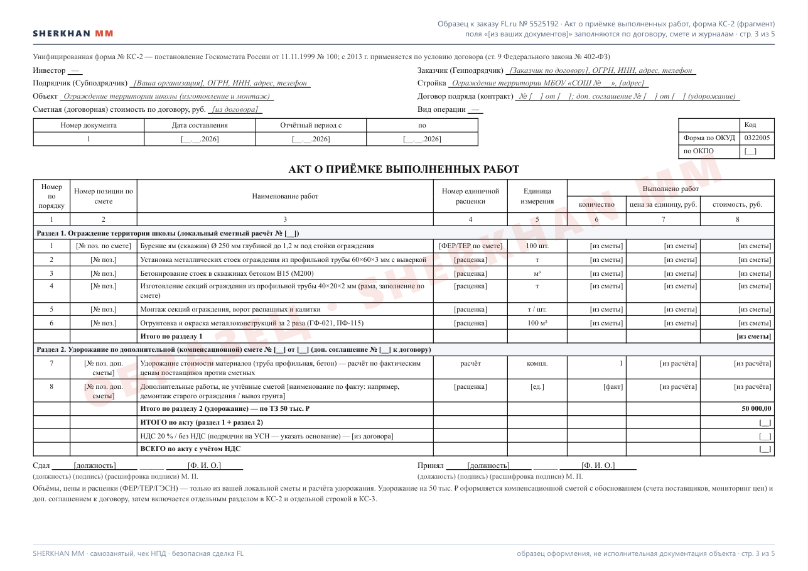
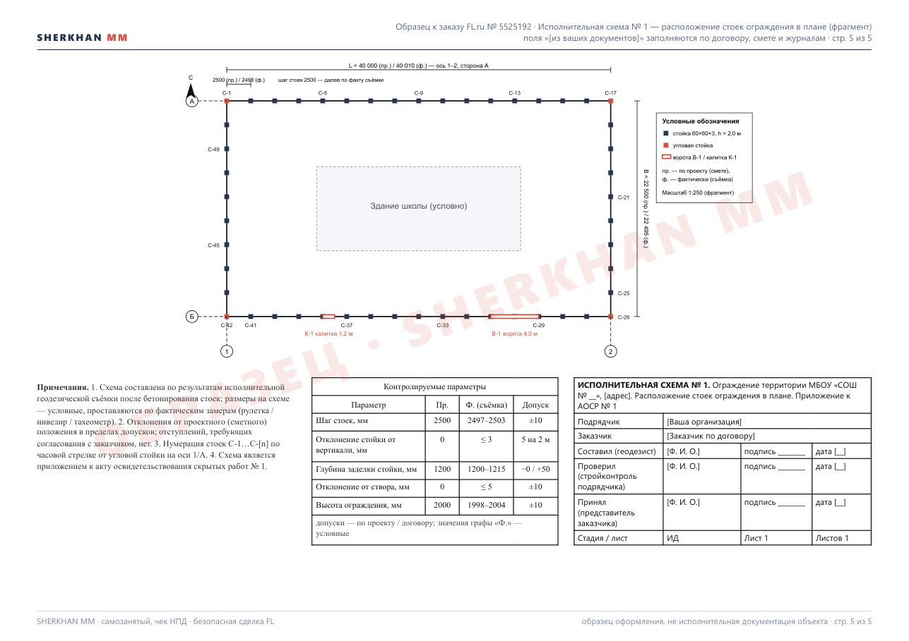

Образец по заказу FL.ru № 5525192 — ограждение территории школы: акт освидетельствования скрытых работ на устройство фундаментов под стойки ограждения по форме приказа Минстроя России № 344/пр (приложение № 3), фрагменты акта КС-2 и справки КС-3 по формам Госкомстата с отдельным разделом удорожания на 50 тыс. ₽, исполнительная схема расположения стоек с таблицей контролируемых параметров. Объёмы, цены, реквизиты и даты помечены «[из ваших документов]» — заполняются по вашему договору, смете, журналам и съёмке; ничего не придумано.


